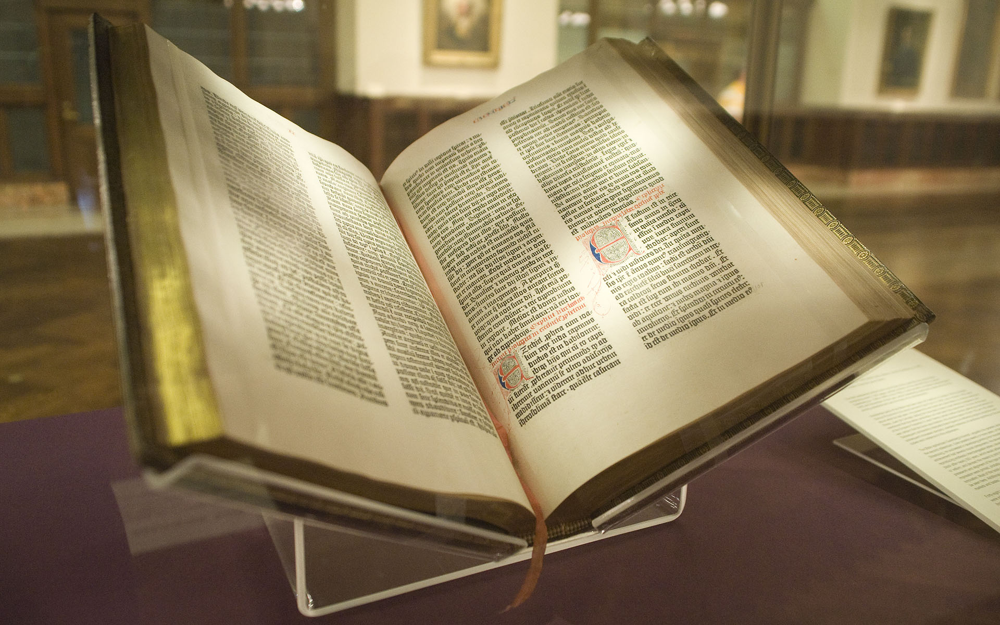

Books
A book is a medium for recording information in the form of writing or images, typically composed of many pages (made of papyrus, parchment, vellum, or paper) bound together and protected by a cover. The technical term for this physical arrangement is codex (plural, codices). In the history of hand-held physical supports for extended written compositions or records, the codex replaces its predecessor, the scroll. A single sheet in a codex is a leaf and each side of a leaf is a page.
As an intellectual object, a book is prototypically a composition of such great length that it takes a considerable investment of time to compose and still considered as an investment of time to read. In a restricted sense, a book is a self-sufficient section or part of a longer composition, a usage reflecting that, in antiquity, long works had to be written on several scrolls and each scroll had to be identified by the book it contained. Each part of Aristotle's Physics is called a book. In an unrestricted sense, a book is the compositional whole of which such sections, whether called books or chapters or parts, are parts.
The intellectual content in a physical book need not be a composition, nor even be called a book. Books can consist only of drawings, engravings or photographs, crossword puzzles or cut-out dolls. In a physical book, the pages can be left blank or can feature an abstract set of lines to support entries, such as in an account book, an appointment book, an autograph book, a notebook, a diary or a sketchbook.
Some physical books are made with pages thick and sturdy enough to support other physical objects, like a scrapbook or photograph album. Books may be distributed in electronic form as ebooks and other formats. Although in ordinary academic parlance a monograph is understood to be a specialist academic work, rather than a reference work on a scholarly subject, in library and information science monograph denotes more broadly any non-serial publication complete in one volume (book) or a finite number of volumes in contrast to serial publications like a magazine, journal or newspaper.
An avid reader or collector of books is a bibliophile or colloquially, "bookworm". A place where books are traded is a bookshop or bookstore. Books are also sold elsewhere and can be borrowed from libraries. Google has estimated that by 2010, approximately 130,000,000 titles had been published.In some wealthier nations, the sale of printed books has decreased because of the increased usage of ebooks.
